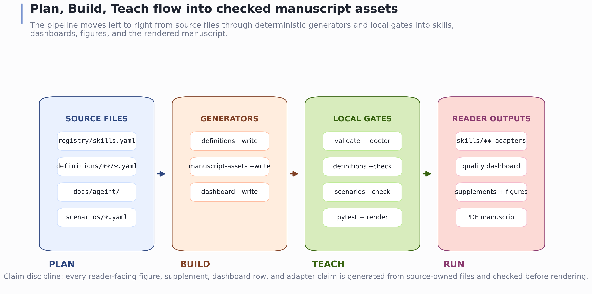
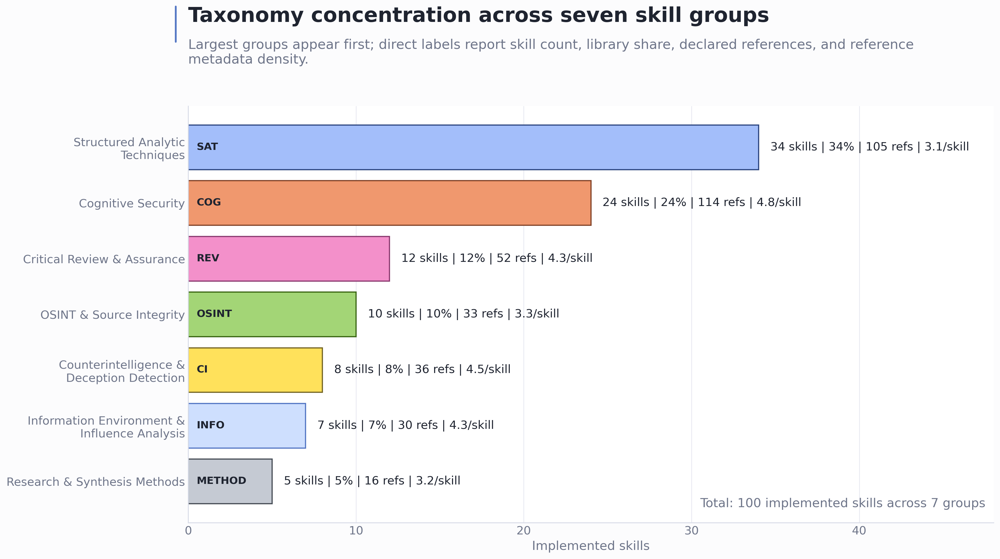
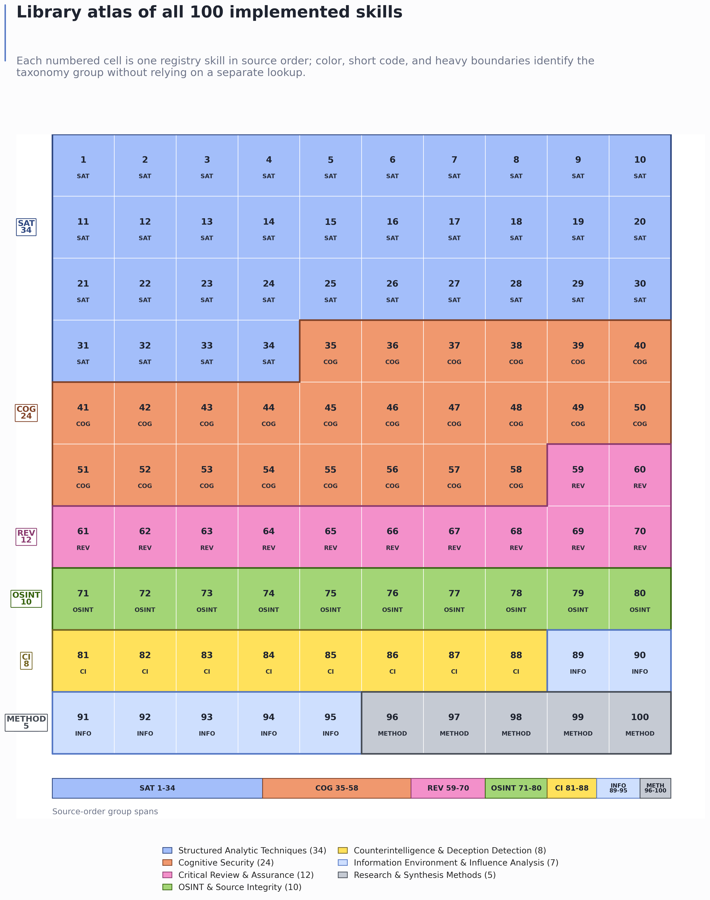

CogSecSkills is a defensive, harness-neutral agent-interface library that turns the human doctrine of cognitive security and analytic tradecraft into dependable, inspectable, agent-usable skills, distributed as an open repository from github.com/docxology/CogSecSkills; the motivation is an information environment in which mis-, dis-, and malinformation are analytically distinct but operationally entangled, false content can diffuse rapidly at platform scale, and credible source evaluation increasingly demands explicit expert practice rather than page-bound reading alone, so that agents asked to weigh competing hypotheses, trace provenance, or critically review a claim need a repeatable procedure and a stable tool-use contract rather than improvisation. The live generated catalogue reports one hundred implemented skills across seven taxonomy groups — Structured Analytic Techniques, Cognitive Security, Critical Review and Assurance, OSINT and Source Integrity, Counterintelligence and Deception Detection, Information Environment and Influence Analysis, and Research and Synthesis Methods — and the library is organized as a Plan, Build, and Teach system in which a registry declares the catalogue, a definitions layer owns the substance and quality controls of each skill, a skills tree exposes the harness-facing build, and a vendored educational upstream named AGEINT explains why each technique exists and how to use it responsibly. The central design choice is to make the reusable skill contract smaller than any one agent interface yet stricter than a prompt collection: each skill is owned by a single canonical definition that declares triggers, inputs, outputs, per-skill reference metadata, group-aware quality controls, and a closed vocabulary of neutral tool verbs before any harness-specific adapter is considered, and that definition is rendered deterministically into a harness-neutral specification, a human-readable skill description, an executable workflow, and one adapter per configured harness whose default members are Claude, Codex, and Hermes, so that portability becomes a property the test suite proves rather than a hope, and installation is concrete rather than interpretive — clone the public repository, install or run the Python package, run validation, point the agent harness at a chosen skill, execute its workflow, and bind runtime tools through the named harness adapter, regenerating adapters from a configuration file for any non-default harness. The quality discipline is the core of the contribution: an automated audit checks that every skill’s defensive boundaries, misuse redirects, evidence requirements, confidence rubrics, privacy and legal constraints, uncertainty handling, failure modes, and negative controls are not merely present but specific to that skill and not reused across the corpus, while an evidence ladder adds curated safe-use and unsafe-redirect scenarios with expected defensive response-shape contracts, reviewed expected answers, and one source-owned worked example per skill, and a generated quality dashboard, supplemental catalogue, metadata matrix, data exports, and a family of deterministic figures — taxonomy counts, the hundred-skill atlas, tool-verb coverage, AGEINT topic crosswalks, the Plan-Build-Teach flow, reference density, harness coverage, and a cover-page installation route — are all produced directly from the live registry and skill specifications so that every visual stays synchronized with the source tree. The evidence boundary is deliberately and explicitly repository-local and reproducible within the checked-out project state, following reproducible-computing, open-data stewardship, and software-citation norms for explicit workflows, version specificity, and citable artifacts; every claim is backed by source files, canonical definitions, generated supplements and figures, the generated dashboard, and project-local verification commands together with a focused test suite and a manuscript renderer, and the work positions CogSecSkills as a validated interface between reasoning, tool use, and defensive output discipline rather than as a claim that any particular model runtime behaves correctly in the field, so its figures, supplements, scenarios, worked examples, and dashboard should be read as synchronized views of the current library state and never as independent measurements of operational performance.
Agentic analysis needs reusable tradecraft, but reuse breaks down when procedures are written only for one interface or one model runtime. A useful cognitive-security skill should say what evidence it needs, which neutral capabilities it may use, what it produces, and when it should be invoked. It should not depend on a single harness syntax, and it should not smuggle offensive persuasion or influence playbooks into a defensive analytic library.
CogSecSkills addresses that problem as a source-owned skills system.
The project separates the catalogue, the canonical definition layer, the
rendered implementation tree, the educational upstream, and the runner
code so each repository-local claim about the library has a concrete
surface to inspect. The same skill can be rendered into the default
Claude, Codex, and Hermes adapter language, or into an additional
configured harness, because durable skill substance lives in
definitions/<group>/<slug>.yaml and the
rendered skill.yaml specification is a checked
harness-neutral interface rather than a model-specific prompt.
The manuscript is framed as a harness-neutral agent-interface contribution situated across four literatures. Intelligence-analysis research explains why structured procedures matter under ambiguity and bias; information-disorder research explains why defensive work must distinguish agents, messages, interpreters, and distribution dynamics; research-software standards explain why metadata, versioning, and regeneration are epistemic controls rather than build conveniences; and LLM tool-use work explains why an interface between reasoning, actions, and external tools needs explicit boundaries [heuer1999psychology; wardleDerakhshan2017informationDisorder; wilkinson2016fair; smith2016softwareCitation; yao2022react; schick2023toolformer].
That separation matters for defensive cognitive-security work because the reader needs to audit both intent and execution. A skill named for claim provenance, narrative inversion, or deception detection is not sufficient by itself; the library must also show the triggers that route to the skill, the inputs it expects, the output it promises, the tool verbs it may use, the harness adapters that bind those verbs, and the AGEINT teaching topic that explains why the skill exists [ageint2026]. CogSecSkills makes those surfaces explicit and then regenerates the manuscript views from them.
The tradecraft vocabulary is anchored in structured analytic techniques and adjacent defensive source-evaluation methods, but the manuscript uses those sources as context rather than as evidence that this library improves decisions in practice. Analysis of Competing Hypotheses and the broader structured-analytic-techniques family are treated as canonical analytic-tradecraft references [heuer1999psychology; heuerPherson2019structured]. Named method families that appear in the library catalogue, including Nominal Group Technique, premortem analysis, prebunking or inoculation, lateral reading, and Admiralty/NATO reliability grading, are cited at the manuscript level to prevent generated skill metadata from standing in for scholarly attribution [delbecq1971groupProcess; klein2007premortem; roozenbeek2022inoculation; wineburg2019lateralReading; ukmod2023jdp200]. The wider problem setting also includes misinformation correction, platform-scale diffusion, social bots, computational propaganda, and synthetic-media provenance, which motivate the library’s defensive skill classes without validating their operational effectiveness [lewandowsky2012misinformationCorrection; vosoughi2018spread; ferrara2016socialBots; woolleyHoward2017computationalPropaganda; bradshawHoward2019globalDisinformation; mirskyLee2021deepfakes].
The manuscript is therefore written for two audiences at once. A library maintainer should be able to trace every table, figure, and count back to source files and gates. A reader who only opens the PDF should still be able to see the shape of the system: which groups dominate, where the optional tool verbs appear, whether the adapters cover Codex and Hermes as well as Claude, and how the educational AGEINT layer connects to implemented skill folders.
CogSecSkills sits between four bodies of work and duplicates none of them. The intent of this subsection is positioning, not a claim that the library improves on any cited source in practice.
The first body is structured analytic tradecraft. Analysis of Competing Hypotheses, estimative-probability language, and the wider structured-techniques family describe how a disciplined analyst should reason under ambiguity and bias [heuer1999psychology; heuerPherson2019structured; kent1964estimativeProbability], and doctrine such as the UK reliability-grading scale standardizes how sources and claims are graded [ukmod2023jdp200]. That literature specifies method; it does not ship a harness-neutral, machine-checkable interface that an agent runtime can route to. CogSecSkills renders those methods into conformance-checked skill specifications and leaves the underlying tradecraft to its canonical sources.
The second body is information-disorder and defensive-intervention research, which explains why cognitive-security work must separate agents, messages, and distribution dynamics, and why correction, inoculation, and lateral reading are defensive levers [wardleDerakhshan2017informationDisorder; lewandowsky2012misinformationCorrection; roozenbeek2022inoculation; wineburg2019lateralReading], against a threat surface of viral diffusion, social bots, computational propaganda, and synthetic media [vosoughi2018spread; ferrara2016socialBots; woolleyHoward2017computationalPropaganda; bradshawHoward2019globalDisinformation; mirskyLee2021deepfakes; lazer2018fakeNews]. CogSecSkills operationalizes the defensive recognition and mitigation side of that research as skills, and explicitly refuses the offensive-influence inverse (see sec. 8).
The third body is LLM tool-use and agent systems, where reasoning is interleaved with external actions through a tool interface [yao2022react; schick2023toolformer]. That work motivates the need for an explicit boundary between reasoning, tool verbs, and output discipline, but it does not supply a defensive analytic skill catalogue. CogSecSkills contributes the catalogue and the closed tool-verb contract that binds it to multiple harnesses.
The fourth body is research-software and reproducibility practice, which treats metadata, versioning, and regenerability as epistemic controls [sandve2013reproducible; wilkinson2016fair; smith2016softwareCitation; c2pa2026spec]. CogSecSkills adopts that stance directly: every prose claim resolves to a source surface and a regeneration command, and the educational upstream is cited as such [ageint2026]. The novel surface is the combination — a defensive cognitive-security skill set that is simultaneously harness-neutral, source-owned, and drift-gated.
This manuscript contributes four project-native artifacts:
registry/, skills/, and
docs/ageint/ coherent.read, search, write,
exec, reason, web,
delegate, and ask.The main sections explain the library boundary, methods, artifacts,
and reproducibility contract. The supplemental sections are generated
from the live library and should be treated as synchronized source
inputs, not hand-authored narrative. S10_skill_catalogue.md
lists every skill with one-line functionality and use conditions;
S11_skill_metadata_matrix.md compresses the same library
into matrices for group counts, verb usage, AGEINT crosswalks, harness
coverage, and figure inventory.
The figures are intentionally redundant with the supplements. The supplements support lookup; the figures support orientation. A reader can use the taxonomy count chart to see group concentration, the grid to scan the full 100-skill surface, the heatmap to understand capability mix, the AGEINT crosswalk to follow teaching alignment, the Reference Density view to inspect declared source backing, and the Harness Contract view to confirm that the configured adapters are part of the same multiharness package.
CogSecSkills is a defensive skills library, not a live influence system, benchmark suite, or external claim engine. Its authoritative inputs are plain-text project files: the registry declares the catalogue, canonical definitions own skill substance and quality controls, rendered skill directories expose harness-facing interfaces, AGEINT documents provide the teaching context, and the Python package validates and reports on the library. The manuscript describes those local surfaces and the gates that keep them synchronized.
The project uses three mutually reinforcing surfaces:
| Surface | Role | Reader question |
|---|---|---|
registry/skills.yaml and
registry/groups.yaml |
Plan | What skills and groups are supposed to exist? |
definitions/<group>/<slug>.yaml |
Build source | What does the skill do, when should it be used, and what defensive quality controls must it carry? |
skills/<group>/<slug>/ |
Build output | What is actually rendered, and how does each skill bind to harnesses? |
docs/ageint/ |
Teach | Which AGEINT topic or educational frame motivates the skill? |
src/cogsecskills/ |
Verify and render | Which checks, reports, routes, and manuscript assets are generated from the source surfaces? |
tests/ |
Regression contract | Which behaviors are guarded against drift? |

Each implemented skill declares a small, inspectable contract:
id, name,
group, status, version,
summary, and ageint_topic;tags and triggers;The default harness adapters translate the neutral verbs into Claude,
Codex, and Hermes idioms while preserving the same workflow. The same
contract also applies to any additional harness configured in
cogsecskills.yaml. This keeps the library portable in the
structural sense: a skill can be evaluated for conformance without
executing any external service.
For Codex and Hermes use, this means the adapter text is not a
separate source of truth. It is a harness-facing binding layer that must
list the same neutral verbs declared by the skill specification. If a
skill declares read, reason, and
write, each configured harness adapter must show how those
verbs are realized in that harness. This is the smallest contract that
makes the skill portable while still leaving each runtime free to
express its own operational idiom.
This contract is deliberately narrower than a general agent framework. ReAct-style work shows why reasoning and action are often interleaved, and Toolformer-style work shows why model interfaces to external tools matter [yao2022react; schick2023toolformer]. CogSecSkills does not attempt to train or evaluate a model to choose tools. It fixes a defensive, inspectable vocabulary of tool verbs and requires every configured harness adapter to bind that vocabulary before the skill is treated as conforming. The contribution is the validated interface layer: source-owned skill substance, closed neutral capabilities, harness-specific bindings, and local drift checks.
The harness profile layer is descriptive, not executable. It records
named external runtimes and framework families that a reader might
target after cloning the repository, but the validation contract remains
controlled only by the configured harness set. In this manuscript,
default adapters means the committed
claude, codex, and hermes
adapters. Configured structural adapters means any
harness id placed in cogsecskills.yaml, regenerated into
every skill folder, and checked by validate.
Documented external profiles means optional metadata
rows in registry/harness_profiles.yaml; those rows do not
certify live runtime behavior, connector safety, vendor support, or
field outcomes. The profiles are not one standard: Gemini CLI context
files, Copilot instruction and agent surfaces, Cursor/Cline-style rule
systems, SDK frameworks, and MCP tool hosts each require
product-specific review before use.
| Profile id | Class | How to read it |
|---|---|---|
gemini_cli |
terminal agent | Candidate for a Gemini CLI-style local harness using product-specific context files after configuration and adapter review. |
github_copilot |
IDE or cloud agent | Candidate for Copilot repository, path-specific, agent, CLI, cloud-agent, or review surfaces whose support varies by product mode. |
devin_local |
local agent | Candidate for local-agent use with permissions, sandboxing, skills, and MCP controls. |
devin_cascade |
IDE agent | Candidate for Cascade/Devin Desktop AGENTS.md and rules surfaces. |
cursor |
IDE agent | Candidate for Cursor rules or skill-style context. |
cline |
IDE agent | Candidate for Cline- or Roo-style rule/skill surfaces and configured tool permissions. |
aider |
terminal agent | Candidate for read-only skill and convention files in a terminal pair-programming workflow. |
continue |
IDE or CLI agent | Candidate for Continue Agent, Chat, or Edit rule contexts. |
jetbrains_ai |
IDE agent | Candidate for JetBrains AI Assistant instruction files. |
openai_agents_sdk |
programmatic runtime | Application-owned wrapper target with tools, approvals, guardrails, and state. |
langgraph |
programmatic runtime | Graph-node and state-machine integration target. |
microsoft_agent_framework |
programmatic runtime | Agent or workflow integration target for .NET and Python applications. |
autogen |
programmatic runtime | AgentChat/Core integration target. |
crewai |
programmatic runtime | Crew, task, flow, and guardrail integration target. |
pydantic_ai |
programmatic runtime | Typed agent and capability integration target. |
mcp_host |
protocol host | Tool and context transport profile, not a standalone model harness. |
perplexity_research |
research companion | Research-support profile unless wrapped by a local tool-executing application. |
Let the closed neutral verb vocabulary be
\[\begin{equation} \label{eq:tool-verb-set} V := \{\mathtt{read}, \mathtt{search}, \mathtt{write}, \mathtt{exec}, \mathtt{reason}, \mathtt{web}, \mathtt{delegate}, \mathtt{ask}\}. \end{equation}\]
Let the default harness set be
\[\begin{equation} \label{eq:default-harness-set} H_0 := \{\mathtt{claude}, \mathtt{codex}, \mathtt{hermes}\}. \end{equation}\]
Let the configured harness set be
\[\begin{equation} \label{eq:configured-harness-set} H_{\mathrm{cfg}} := \operatorname{harnesses}(\mathtt{cogsecskills.yaml})\quad\text{with default }H_0. \end{equation}\]
For each implemented skill s in set S, the
source specification can be read as
\[\begin{equation} \label{eq:skill-spec-tuple} s = (id_s, name_s, group_s, status_s, version_s, summary_s, topic_s, tags_s, triggers_s, V_s, I_s, O_s, refs_s, Q_s, wf_s, A_s) \end{equation}\]
subject to
\[\begin{equation} \label{eq:skill-conformance} V_s \subseteq V,\qquad \operatorname{dom}(A_s)=H_{\mathrm{cfg}},\qquad \forall h \in H_{\mathrm{cfg}}:\ V_s \subseteq B_{s,h}. \end{equation}\]
Here I_s and O_s are the declared input and
output schemas, refs_s is the per-skill metadata reference
set, Q_s is the required quality-control bundle,
wf_s is the workflow path, A_s maps each
configured harness to exactly one adapter path, and B_s,h
is the set of neutral verbs bound in harness h adapter
table. Conformance consists of schema validity, registry-to-folder
agreement, allowed-verb membership, required quality fields, workflow
presence, adapter-path completeness for every harness in
H_cfg, and adapter binding coverage for every declared verb
in V_s.
| Field family | Source field(s) | Constraint |
|---|---|---|
| Identity | id, name, group,
status, version |
id must match group.slug; implemented
skills must exist on disk. |
| Routing | tags, triggers,
ageint_topic |
Used for navigation and AGEINT crosswalks, not empirical routing claims. |
| Capability | tools[*].verb |
Every verb must be a member of V. |
| Interface | inputs, outputs |
Names and descriptions must be declared in
skill.yaml. |
| Provenance metadata | refs |
Declared skill references; not the same as manuscript citation keys. |
| Quality controls | defensive_boundary, misuse_redirect,
evidence_requirements, confidence_rubric,
uncertainty_handling,
privacy_legal_constraints, failure_modes,
negative_controls |
Required by canonical definitions and surfaced in rendered skill files. |
| Harness mapping | harness |
Every harness in H_cfg must resolve to an adapter file
whose first-column binding table covers V_s. |
The manuscript figures are organized from overview to contract detail. The current registry groups the 100 implemented skills into seven taxonomy groups. Those groups are not claimed to be a complete or mutually exclusive theory of cognitive security; they are a defensive coverage map spanning information disorder, source integrity, deception and counterintelligence, structured analysis, research synthesis, and information-environment coordination [wardleDerakhshan2017informationDisorder; ukmod2023jdp200; lazer2018fakeNews; ferrara2016socialBots; bradshawHoward2019globalDisinformation]. The taxonomy count chart answers “how much of the library is in each group?” The skill grid answers “can I see all 100 areas at once?” The verb heatmap answers “which groups use which neutral capabilities?” The AGEINT crosswalk answers “which teaching topics motivate which implementation groups?” The Reference Density figure answers “where is declared source backing deepest?” The Harness Contract figure answers “does every group maintain adapter coverage for the configured harness set?” The flow figure ties those views back to the source surfaces and gates. The count and grid figures below are generated from the same ordered registry rows used by the supplemental catalogue, so the visual order and group membership remain synchronized with the source tree.


The manuscript is generated and maintained from the same project
surfaces that the CLI validates. The registry is loaded first so the
catalogue order, group membership, status, and AGEINT topic remain the
plan of record. Canonical definitions under definitions/
own the skill substance; definitions --write renders those
definitions into on-disk skill.yaml, SKILL.md,
workflow.md, and harness adapters. The manuscript asset
generator then joins the registry and rendered typed skill
specifications by skill id and emits supplemental Markdown, compact JSON
and CSV exports, body figures, and a title-page cover image that
explains installation into an agent harness. This source-first approach
follows the reproducibility principle that outputs should retain enough
workflow, version, and source context to be regenerated and inspected
[sandve2013reproducible; wilkinson2016fair].
This source-first method prevents the manuscript from becoming a
parallel catalogue. If skill substance changes,
cogsecskills definitions --check proves the rendered skill
tree still matches canonical YAML. If a skill name, trigger, tool verb,
input, output, reference count, harness adapter, or source path changes,
cogsecskills manuscript-assets --check detects drift in the
generated manuscript inputs.
Skill implementation follows a conservative pipeline:
registry/skills.yaml declares the intended
skill area and group.definitions/<group>/<slug>.yaml declares the
tool plan, triggers, inputs, outputs, workflow steps, defensive
boundary, evidence discipline, uncertainty rules, failure modes, and
negative controls.definitions --write renders a skill directory under
skills/<group>/<slug>/ with
skill.yaml, SKILL.md,
workflow.md, and one adapter per configured harness.skill.yaml carries the generated neutral verbs,
triggers, inputs, outputs, references, and AGEINT topic.The optional harness profile registry sits beside the skill registry
but has a different function.
registry/harness_profiles.yaml records documented external
profiles such as gemini_cli, github_copilot,
devin_local, devin_cascade,
cursor, cline, aider,
continue, jetbrains_ai,
openai_agents_sdk, langgraph,
microsoft_agent_framework, autogen,
crewai, pydantic_ai, mcp_host,
and perplexity_research. These are documented external
profiles, not validation targets. A profile becomes one of the
configured structural adapters only when its id is added to
cogsecskills.yaml, the skill tree is regenerated, and the
adapter files pass validation. The default adapters remain
claude, codex, and hermes.
Profile classes are deliberately separated: instruction-file products,
IDE rule systems, terminal pair-programming tools, SDK frameworks, MCP
hosts, and research companions require different integration reviews
even when they share the same neutral skill files.
src/cogsecskills/artifacts/manuscript_assets/__init__.py
is the producer for the generated manuscript layer. Its outputs are
intentionally committed as manuscript source inputs because they support
review and PDF rendering, but they remain generated. The command
writes:
manuscript/S10_skill_catalogue.md, a grouped catalogue
of all skills with functionality, “Use when” text, verbs, inputs,
outputs, AGEINT topic, reference count, and source path;manuscript/S11_skill_metadata_matrix.md, a compact
matrix view of group counts, verb usage, AGEINT crosswalks, harness
coverage, and figure inventory;output/data/skill_catalogue.json and
output/data/skill_catalogue.csv, machine-readable exports
of the same rows;../figures/, including
manuscript body figures and the configured title-page installation
cover.The generator treats static PNGs as the right output form because the
manuscript is rendered to PDF and static web artifacts. Plot code uses
explicit color maps for the seven real registry groups, direct labels
where they reduce lookup, and subtitles that state the data scope. The
chart data are not manually curated: counts, reference totals, harness
coverage, AGEINT topics, verb matrices, and the install-cover skill
counts are derived from the same SkillRow records used by
the generated catalogue.
Each figure has a narrow analytical question. Taxonomy counts compare group size; the skill grid maps all 100 registry entries to one compact atlas; the verb heatmap counts closed-set tool verbs by group; the AGEINT crosswalk connects groups to teaching topics; the Plan/Build/Teach flow shows the source-to-render path; Reference Density compares declared source-reference backing; Harness Contract checks adapter coverage across the configured harness set, whose default is Claude, Codex, and Hermes; and the cover installation visual answers how a reader clones the public repository, validates it, and binds skills into an agent harness. These figures are descriptive views of the library metadata and installation contract. They do not measure field performance, adversary coverage, or user outcomes.
Reference Density is defined here as declared references per
implemented skill within a taxonomy group. For group g in
set G,
\[\begin{equation} \label{eq:reference-density} d_g := \frac{R_g}{N_g}, \end{equation}\]
where R_g is the total count of declared per-skill
refs entries for implemented skills in g, and
N_g is the number of implemented skills in g.
The metric is metadata density, not evidence quality, empirical
validity, or a proxy for operational effectiveness.
The local gate sequence is designed to catch different failure
classes: definitions --check catches canonical-definition
and rendered-skill drift, validate catches structural
contract drift, report summarizes implementation status,
doctor catches weak, generic, or incomplete skill content,
pytest catches regression bugs,
manuscript-assets --check catches generated-manuscript
drift, and the sibling template renderer catches Markdown and PDF
integration failures.
The stricter quality checks are deliberately local and textual. They require each canonical definition to include a defensive boundary, misuse redirect, evidence discipline, confidence rubric, uncertainty handling, privacy/legal constraints, failure modes, and negative controls. For sensitive skills, a generic safety sentence is insufficient: the negative controls must include an unsafe request redirected away from abuse, a safe defensive request pattern, wording specific to the skill, and no reused individual negative-control entry across the corpus. The same specificity pressure now applies to confidence rubrics, evidence requirements, and privacy/legal constraints: exact reused entries and group-only boilerplate fail the definition and doctor gates. Evidence requirements must distinguish evidence from inference, and uncertainty handling must preserve unknowns and credible alternatives. These checks raise the floor for the 100 rendered skills without claiming that the text has been field-validated.
The figure tests intentionally cover the inventory and palette contract as well as file existence. A missing generated PNG is easy to detect, but a stale palette can be more subtle: if the registry adds or renames a group, the visual system must be updated deliberately rather than silently falling back to an unrelated color.
| Surface | Role |
|---|---|
registry/skills.yaml |
Enumerates the 100 skill areas and their implementation status. |
registry/groups.yaml |
Defines the seven taxonomy groups used by the catalogue and figures. |
definitions/**.yaml |
Owns canonical skill substance, workflow steps, quality controls, and negative controls. |
skills/**/skill.yaml |
Declares the harness-neutral contract for each implemented skill. |
skills/**/SKILL.md and workflow.md |
Provide the human-facing skill description and neutral procedure. |
skills/**/harness/*.md |
Bind the neutral verbs to every configured harness; the default set is Claude, Codex, and Hermes. |
scenarios/defensive_readiness.yaml |
Curated safe-use, unsafe-redirect, expected-response, and expected-answer fixtures used by the deterministic scenario-readiness gate. |
examples/skill-worked-examples.yaml |
Source-owned deterministic worked examples, one per implemented skill. |
docs/skill-worked-examples.md and
output/data/skill_worked_examples.json |
Generated worked-example views for all 100 skills. |
docs/quality-dashboard.md and
output/data/quality_dashboard.json |
Generated dashboard and machine-readable snapshot over all 100 skills, quality capsules, scenario coverage, worked-example coverage, harnesses, references, claim-boundary status, and verified-state rows. |
docs/ageint/ |
Supplies the educational upstream used for AGEINT topic alignment. |
src/cogsecskills/ |
Owns parsing, validation, reporting, routing, quality linting, scenario checking, and manuscript asset generation. |
tests/ |
Guards parser, authoring, validation, reporting, routing, configuration, scenario checking, and manuscript generator behavior. |
The figure set is generated from the live registry and skill metadata. The taxonomy count and skill grid figures show library coverage at a glance. The verb heatmap shows how neutral tool capabilities are distributed by group. The AGEINT network shows how group membership connects to teaching topics. The Reference Density figure shows where declared source-reference backing is concentrated, and the Harness Contract figure shows whether the configured harness adapters cover every group. The flow figure in fig. 1 shows how the source surfaces, gates, and manuscript assets fit together. The title-page cover image is also generated: it shows the public GitHub install path, validation command, route command, and harness-binding files a reader needs to connect CogSecSkills to an agent harness.
The figures should be read as descriptive system views. They are strong evidence for what is implemented, declared, generated, installable, and checked in the local project. They are not evidence that any specific defensive workflow will succeed in an operational setting. That distinction is important because visual polish can otherwise make metadata counts or installation diagrams feel like empirical validation.


![Figure 7: cogsecskills_harness_contract.png: Adapter coverage scorecard for the configured harness set, defaulting to Claude, Codex, and Hermes. Use this figure before installing the library into an agent harness to see, at a glance, that every group declares the configured-harness adapters. The cells count skills that declare an adapter for each configured harness, by group and as whole-library totals; the stronger invariants — that each declared adapter file exists on disk and that its binding table covers every verb the skill uses — are enforced separately by validate and the conformance suite, not by this figure. The figure does not claim behavioral success for any external runtime.](../figures/cogsecskills_harness_contract.png)
The Reference Density view complements the catalogue because it makes source backing visible by group rather than by individual row. The Harness Contract view complements the validator because it presents configured-harness adapter coverage in the reader’s visual path, including Codex and Hermes in the default set rather than treating them as secondary implementation details.
Per-skill refs counts are metadata fields declared in
skill.yaml; they are not equivalent to resolved citation
markers in the manuscript bibliography. The manuscript-level
bibliography supports external concepts, standards, and methods that
appear in the prose, while per-skill refs support local
navigation and source-backlog discipline inside the library.
The two generated supplemental sections make the library navigable
without requiring the reader to open 100 folders. sec. 11 lists every
skill with one-line functionality and use conditions. sec. 12 summarizes
the same data as matrices and points back to the figure files. Both
sections carry a generated-file header and should be refreshed with
python -m cogsecskills manuscript-assets --write.
The catalogue includes both broad analytic methods and concrete
defensive checks: for example,
osint_integrity.claim_provenance_verification appears as
Claim Provenance Verification, with its use conditions, neutral verbs,
AGEINT topic, reference count, and source path generated from the live
skill metadata.
The skill-quality surface is now source-owned rather than a
prose-only governance promise. Every canonical definition must carry the
same required quality bundle: defensive boundary, misuse redirect,
evidence requirements, confidence rubric, uncertainty handling,
privacy/legal constraints, failure modes, and negative controls. The
renderer places those fields into the skill files, while
definitions --check, doctor, and the pytest
contract suite check that the rendered tree and manuscript views remain
synchronized with the definitions.
The audit is intentionally stricter than checking whether a safety heading exists. It rejects negative controls that only repeat generic boilerplate, requires both an unsafe redirect and a safe defensive request pattern, requires each definition to include skill-specific unsafe and safe examples, and rejects reused individual negative-control entries across the corpus. It also rejects repeated confidence-rubric, evidence-requirement, and privacy/legal entries, requires evidence requirements to label evidence and inference, and requires uncertainty handling to preserve unknowns and credible alternatives. A cognitive-security manipulation skill, an OSINT geolocation skill, a counterintelligence elicitation skill, and a structured analytic technique should therefore carry different governance language even though they share the same defensive contract shape.
This is a local quality gate, not a safety proof. It can show that all 100 skills include group-aware defensive boundaries, skill-specific and non-reused confidence, evidence, privacy/legal, and negative-control entries, evidence labeling, and uncertainty discipline in the current repository state. It cannot prove that every future user, external model, or organizational deployment will interpret the skill correctly.
The evidence ladder adds two levels above static corpus inspection.
scenarios/defensive_readiness.yaml contains 28 curated
fixtures: two safe defensive requests and two unsafe refusal/redirect
probes for each of the seven groups.
python -m cogsecskills scenarios --check loads those
fixtures, runs the local router, confirms the expected implemented skill
appears in the top route matches, checks declared output terms, verifies
the fixture’s expected defensive response shape, verifies reviewed
expected-answer sections and all-2 rubric scores, verifies quality terms
such as defensive boundary, evidence/inference labeling, unknowns,
alternatives, safe defensive examples, and unsafe refusal/redirect
markers, and rejects fixture or expected-answer wording that embeds
operational misuse detail.
examples/skill-worked-examples.yaml adds one reviewed
local worked example per skill.
python -m cogsecskills examples --check verifies exact
100-skill coverage, defensive evidence/inference/gap labeling,
confidence and uncertainty language, declared-output references, local
fixture provenance, absence of operational misuse wording, and generated
Markdown/JSON freshness. These examples are expected-answer shapes, not
live model transcripts.
These gates are deliberately deterministic. They do not ask Claude, Codex, Hermes, Gemini, a browser, an OSINT connector, or any live platform to perform the task. Their claim is narrower and more useful for a repository manuscript: curated defensive scenarios and worked examples can still be mapped to concrete skill contracts, and the referenced skills expose the local metadata an agent harness needs to stay bounded. The gates do not show that a live runtime will select the same skill, use tools correctly, or produce a high-quality answer in the field.
python -m cogsecskills dashboard --write generates
docs/quality-dashboard.md,
docs/quality-dashboard.html, and
output/data/quality_dashboard.json. The dashboard gives
readers a compact row for every implemented skill: group, verbs,
configured harnesses, reference count, quality-capsule presence,
scenario coverage, worked-example coverage, local claim-boundary status,
and source path. The static HTML view is a dependency-free reader
surface for scanning the same payload with responsive tables and print
styling. It also surfaces the 28 scenario fixtures, their
expected-answer section titles, the 100 worked examples, and the latest
verified-state lines from TODO.md.
The dashboard is useful for review because it turns the corpus into a
scanable drift surface. Missing scenario coverage, missing worked
examples, missing quality capsules, stale generated files, or missing
verified-state rows make dashboard --check fail. It is not
a benchmark, user study, or live harness transcript; it is a generated
view of repository-local evidence.
External scholarship is used here to position the system, not to validate its effectiveness. The table below maps each literature spine to the local manuscript claim it supports and the claim it does not support.
| Literature spine | Supports in this manuscript | Does not support |
|---|---|---|
| Intelligence analysis, structured techniques, and estimative language [heuer1999psychology; heuerPherson2019structured; kent1964estimativeProbability; ukmod2023jdp200] | The need for explicit analytic procedure, confidence discipline, and decision-support boundaries. | That CogSecSkills improves analyst judgment in practice. |
| Information disorder, false-news diffusion, correction, and inoculation [wardleDerakhshan2017informationDisorder; vosoughi2018spread; lewandowsky2012misinformationCorrection; roozenbeek2022inoculation; lazer2018fakeNews] | The relevance of defensive skills for mis-, dis-, and malinformation, corrective reasoning, and resilience-oriented analysis. | That the library reduces misinformation spread or changes user beliefs. |
| Source evaluation, social bots, computational propaganda, and coordinated manipulation [wineburg2019lateralReading; ferrara2016socialBots; woolleyHoward2017computationalPropaganda; bradshawHoward2019globalDisinformation] | The need to analyze sources, lateral corroboration, account ecology, automation, and coordination rather than content alone. | That the skills detect live campaigns, bots, or coordinated activity with validated accuracy. |
| Synthetic media and provenance standards [mirskyLee2021deepfakes; c2pa2026spec] | The need for authenticity-aware media review and explicit content-provenance metadata in source-integrity work. | That C2PA metadata or this library proves authenticity, detects deepfakes, or replaces forensic analysis. |
| LLM reasoning/action and tool-use systems [yao2022react; schick2023toolformer] | The positioning of CogSecSkills as a validated interface between reasoning, tool verbs, and harness-specific adapters. | That any configured model runtime will choose or execute tools correctly in the field. |
| Reproducible research software, FAIR stewardship, and software citation [sandve2013reproducible; wilkinson2016fair; smith2016softwareCitation] | The source-owned definition layer, generated supplements, release manifest, and citable software boundary. | That local reproducibility proves empirical security efficacy. |
A claim is manuscript-ready only when it has one of the following support types:
references.bib for external
literature.This pass intentionally keeps external scholarly claims bounded. The manuscript therefore emphasizes local structure, implementation status, reproducibility, and visualization rather than empirical effectiveness or deployment outcomes. When external context is needed, citations are used for problem framing, agent-interface positioning, reproducibility and software-citation norms, AGEINT, structured analytic techniques, named defensive methods, information-environment scholarship, provenance standards, and official doctrine rather than for unsupported performance claims [sandve2013reproducible; smith2016softwareCitation; ageint2026; wardleDerakhshan2017informationDisorder; yao2022react].
Run project-local gates from a checked-out CogSecSkills project root:
export PROJECT_ROOT="${PROJECT_ROOT:-/path/to/CogSecSkills}"
cd "${PROJECT_ROOT}"
PYTHONPATH="src:." python -m cogsecskills definitions --write
PYTHONPATH="src:." python -m cogsecskills definitions --check
PYTHONPATH="src:." python -m cogsecskills scenarios --check
PYTHONPATH="src:." python -m cogsecskills examples --write
PYTHONPATH="src:." python -m cogsecskills examples --check
PYTHONPATH="src:." python -m cogsecskills dashboard --write
PYTHONPATH="src:." python -m cogsecskills dashboard --check
PYTHONPATH="src:." python -m cogsecskills manuscript-assets --write
PYTHONPATH="src:." python -m cogsecskills manuscript-assets --check
PYTHONPATH="src:." python -m cogsecskills validate
PYTHONPATH="src:." python -m cogsecskills report
PYTHONPATH="src:." python -m cogsecskills doctor
PYTHONPATH="src:." python -m pytest tests/test_cogsecskills_*.py tests/test_skill_library_conformance.py --cov=src/cogsecskills --cov-report=term-missingdefinitions --write must run before rendering whenever
skill substance or configured harnesses change.
definitions --check should then pass before manuscript
assets are regenerated. scenarios --check should pass
before treating curated safe-use, unsafe-redirect, expected
response-shape, and expected-answer fixtures as current.
examples --write and examples --check keep the
generated 100-skill worked-example views synchronized with their source
YAML. dashboard --write should run after TODO, scenario,
example, registry, or skill metadata changes, and
dashboard --check should then pass before the Markdown,
HTML, and JSON dashboard views are treated as current.
release-metadata --write keeps committed release metadata
deterministic by omitting exact git revision, branch, and dirty-state
values from drift-checked files; those values are runtime observations
used by stricter release modes. manuscript-assets --write
must run before rendering whenever registry or rendered skill metadata
changes. manuscript-assets --check should then pass with no
findings; otherwise the committed manuscript sources and figures no
longer match the live library.
Render and validate the manuscript through the sibling template checkout. Use repository-relative paths or environment variables; do not rely on author-local absolute filesystem paths.
export PROJECT_ROOT="${PROJECT_ROOT:-/path/to/CogSecSkills}"
export TEMPLATE_ROOT="${TEMPLATE_ROOT:-/path/to/template}"
cd "${TEMPLATE_ROOT}"
uv run python -m infrastructure.validation.cli markdown projects/working/CogSecSkills/manuscript/
uv run python scripts/03_render_pdf.py --project working/CogSecSkills
pdftotext "${PROJECT_ROOT}/output/pdf/CogSecSkills_combined.pdf" - | rg "References|Supplemental 100-Skill Catalogue|Use when|Claim Provenance Verification|Taxonomy|Reference Density|Harness Contract|Evidence Ladder|Skill Worked Examples|Scenario Readiness|expected answers|Quality Dashboard|Release Manifest"
rg -n "Citation .*undefined|undefined references|LaTeX Warning: Reference.*undefined|Missing character|Package .* Error|File .* not found" "${PROJECT_ROOT}/output/pdf/_combined_manuscript.log"The final rg command is expected to produce no matches.
A nonzero exit status from that command is acceptable when it means the
searched error strings were absent. Avoid broad not found
log searches because some LaTeX packages emit benign informational lines
such as pdfdraftmode not found.
output/ and manuscript
source under manuscript/.scenarios/defensive_readiness.yaml as a curated
local fixture set for route, quality-contract, and expected-answer
readiness, not as empirical validation.examples/skill-worked-examples.yaml,
docs/skill-worked-examples.md, and
output/data/skill_worked_examples.json as deterministic
local worked-example fixtures, not live model transcripts.docs/quality-dashboard.md and
output/data/quality_dashboard.json as generated navigation
and drift surfaces, not as field-effectiveness evidence.manuscript/S10_skill_catalogue.md,
manuscript/S11_skill_metadata_matrix.md,
output/data/skill_catalogue.*, and the eight
../figures/*.png manuscript figures as generated from
source-owned inputs.The narrow PDF margin is part of the render contract because the generated catalogue and metadata matrix are table-heavy. Any future margin change should be checked in the rendered PDF, not only in Markdown, so long labels, figure captions, and long-table cells remain readable.
The current evidence is local conformance evidence. It supports claims about the registry, implemented skill count, harness adapter presence, generated figures, generated supplements, curated defensive scenario fixtures, and project-local verification gates. It does not establish real-world operational effectiveness, adversary coverage, user outcomes, or comparative superiority over other skill libraries.
The library is defensive by contract and review rather than by a complete formal safety proof. Skill text, harness adapters, scenarios, and AGEINT material still require human review when the library is adapted to a new organization, workflow, or model runtime. The current gates can detect missing files, invalid verbs, stale generated assets, thin content, generic negative controls, repeated individual negative-control entries, repeated confidence/evidence/privacy boilerplate, missing safe defensive request patterns, weak evidence or uncertainty labeling, and curated safe-use or unsafe-redirect scenario drift, but they cannot prove that every future use remains within a defensive analytic frame.
The manuscript now includes a verified bibliography for reproducibility norms, software citation, AGEINT, structured analytic techniques, information disorder, misinformation diffusion and correction, computational propaganda, social bots, deepfakes, provenance standards, LLM tool-use systems, selected named methods, and official reliability-grading doctrine. It still avoids new empirical claims: citation support for a named method or problem domain is not evidence that this library implements that method effectively in operational settings.
The visualizations have the same boundary. They make the library easier to inspect, but they do not transform metadata into empirical evidence. A complete heatmap cell means a verb is declared in source; a complete Harness Contract cell means the adapter file is present and bound; a higher Reference Density value means more declared references in the skill metadata. None of those observations prove that a future user will choose the right skill, interpret evidence correctly, obtain a better security outcome, detect a live bot campaign, or authenticate synthetic media.
The defensive boundary is enforced by source review and manuscript claim discipline rather than by a complete formal safety proof. The following table is the minimum review rule-set for dual-use skill text and adapter wording.
| Risk surface | Disallowed output | Allowed defensive transformation | Review failure condition |
|---|---|---|---|
| Persuasion or influence | Instructions to manipulate, target, coerce, or exploit an audience. | Analysis that identifies persuasion tactics, vulnerabilities, or safeguards. | Skill text tells an operator how to increase manipulative impact. |
| Deception and impersonation | Fabricated personas, deceptive outreach scripts, or concealment advice. | Detection, provenance tracing, and defensive response planning. | Adapter wording enables deception rather than analyzing it. |
| OSINT and source work | Doxing, evasion, account compromise, or harassment workflows. | Public-source verification, citation repair, and source-quality assessment. | Workflow asks for private data collection or bypass behavior. |
| Counter-messaging | Engagement playbooks that optimize emotional pressure or behavior change. | Prebunking, inoculation, and audience-protection framing bounded to education. | Output becomes an influence campaign plan rather than a defensive brief. |
| Automation | Autonomous execution against people, platforms, or live targets. | Human-reviewed checklists, audit notes, and bounded evidence summaries. | Skill removes human review from high-impact or dual-use steps. |
Any skill or adapter that crosses those lines should fail review even if it passes structural validation. The current validator can prove file and schema conformance; it cannot prove future defensive intent [ageint2026].
Future evaluation should be split into three lanes. The first lane is repository integrity: definition drift, adapter coverage, citation resolution, render reproducibility, and release-manifest accuracy. The second lane is analyst usability and output quality: whether users can choose the right skill, follow the workflow, express uncertainty clearly, and produce auditable defensive outputs. The third lane is adversarial realism: scenario tasks involving misinformation correction, coordinated amplification, computational propaganda, and synthetic-media provenance, designed so they test defensive recognition and mitigation without generating offensive playbooks [lewandowsky2012misinformationCorrection; ferrara2016socialBots; bradshawHoward2019globalDisinformation; mirskyLee2021deepfakes; c2pa2026spec].
The manuscript should remain a skills-system report until additional evidence exists. Local readiness means the source files, generated assets, and render gates agree; it should not be represented as field validation, public release readiness, or empirical proof of cognitive-security efficacy.
Cognitive-security tradecraft is dual-use. The same techniques that let a defender recognize a coordinated influence operation, grade a source, or triage synthetic media can, if inverted, describe how to run such an operation. This section states the project’s ethical posture explicitly so that reviewers and adopters do not have to infer it.
CogSecSkills is scoped to the defensive recognition, assessment,
documentation, and mitigation side of every technique it
implements. The library contains no offensive playbooks: it does not
author manipulation campaigns, fabricate personas, optimize emotional
pressure, plan harassment or doxing, or remove human review from
high-impact action. Each skill carries an explicit defensive boundary, a
misuse-redirect clause that refuses the offensive inverse and points
back to the defensive form, and negative-control examples that pair an
unsafe request with the safe defensive pattern it should be redirected
to. These are not manuscript assertions; they are fields enforced per
skill by the quality linter (doctor) and visible in the
generated worked examples and quality dashboard.
The defensive boundary is held by two mechanisms working together. The first is structural: the validator proves file and schema conformance, verb legality, adapter coverage, and the presence of the defensive quality bundle on every skill. The second is human review: the governance rule-set in sec. 7 defines, per risk surface, the disallowed output, the allowed defensive transformation, and the review-failure condition, and any skill or adapter that crosses those lines should fail review even when it passes structural validation. The structural gate can prove that the defensive bundle exists; it cannot prove future defensive intent [ageint2026]. Responsibility for that judgment stays with the maintainers and with anyone who adapts the library to a new organization or runtime.
This work is open-source software with no human-subjects component. The scenario fixtures are curated, deterministic route-and-contract checks, and the worked examples are expected-answer shapes; neither is a live model evaluation, a study of human participants, or a record of operational use. No institutional review was required, and no personal data was collected or processed in producing the library, the manuscript, or its generated supplements.
The library is provided under the Apache License 2.0, on an as-is basis, for defensive analytic work. Adopters remain responsible for using it within applicable law and platform terms, for keeping human review on dual-use and high-impact steps, for not repurposing defensive recognition skills into influence, surveillance, or harassment workflows, and for re-running the conformance and quality gates whenever skills are modified or extended. Distribution of the skills to a new harness does not transfer the defensive judgment those gates cannot encode; that judgment travels with the operator.
Stating a defensive posture is not the same as proving safety. The gates and the review rule-set reduce the risk that the library ships offensive content or silently drifts; they do not guarantee that every downstream use remains defensive, nor do they make any claim about field effectiveness, which is out of scope for the current local evidence base (see sec. 7).
This supplement records the source surfaces that own manuscript claims. Use it as the quick provenance map before editing prose, generated supplements, figures, or verification statements.
| Surface | Role |
|---|---|
registry/skills.yaml |
Catalogue plan: skill ids, names, groups, status, summaries, and AGEINT topics. |
registry/groups.yaml |
Taxonomy plan: group ids and display titles. |
skills/**/skill.yaml |
Skill build contract: triggers, verbs, inputs, outputs, references, and harness paths. |
skills/**/SKILL.md |
Harness-facing one-skill description and “when to use” guidance. |
skills/**/workflow.md |
Harness-neutral step procedure and anti-criteria. |
skills/**/harness/*.md |
Adapter bindings for every configured harness; the default set is Claude, Codex, and Hermes. |
scenarios/defensive_readiness.yaml |
Curated safe-use, unsafe-redirect, expected response-shape, and expected-answer fixtures for deterministic scenario readiness. |
examples/skill-worked-examples.yaml |
Source-owned deterministic worked examples, one per skill. |
examples/ |
Local non-secret harness smoke transcripts, group examples, and source worked examples; these are fixtures, not live runtime evidence. |
docs/skill-worked-examples.md |
Generated Markdown worked-example catalogue for all 100 skills. |
output/data/skill_worked_examples.json |
Generated machine-readable worked-example snapshot. |
docs/quality-dashboard.md /
docs/quality-dashboard.html |
Generated Markdown and static HTML dashboard over all 100 skills, quality capsules, scenario coverage, worked-example coverage, harnesses, references, claim-boundary status, and verified-state rows. |
output/data/quality_dashboard.json |
Generated machine-readable dashboard snapshot used for drift review. |
docs/claim-boundaries.md |
Reader-facing statement of what local gates prove and do not prove. |
docs/connector-boundaries.md |
Optional OSINT/web connector boundaries before any live connector is wired. |
docs/analyst-output-review.md |
Lightweight rubric for future analyst-output review fixtures. |
docs/future-validation-protocols.md |
Future-only protocols for baseline comparison, analyst usability, connector readiness, and DOI/publication readiness. |
docs/release-checklist.md |
Release-candidate command and human-review checklist. |
docs/ageint/ |
Educational upstream and AGEINT topic context. |
src/cogsecskills/ |
Parser, validator, authoring, insights, scenario checker, CLI, and manuscript asset generator. |
tests/ |
Regression evidence for contract, CLI, configuration, insights, scenarios, and generated assets. |
CITATION.cff |
Software citation metadata for the repository-level artifact. |
codemeta.json |
Machine-readable software metadata. |
pyproject.toml |
Package metadata, dependency declaration, and test/coverage configuration. |
uv.lock |
Dependency lockfile for local reproducibility. |
manuscript/references.bib |
Verified manuscript-level bibliography. |
manuscript/S02_release_manifest.md |
Release provenance and gate-result surface. |
output/data/ |
Generated machine-readable catalogue exports. |
../figures/ |
Generated visualizations referenced by the manuscript. |
manuscript/references.bib.${PROJECT_ROOT} and ${TEMPLATE_ROOT} rather
than author-local absolute paths.This manifest records the source and environment identifiers for the manuscript snapshot. It is a release-provenance surface for local review; it does not claim an archive DOI, public package publication, or empirical field validation.
| Field | Value |
|---|---|
| Repository | https://github.com/docxology/CogSecSkills |
| Citation metadata | CITATION.cff |
| Code metadata | codemeta.json |
| Package version | 0.1.0 |
| License | Apache-2.0 |
| Source revision | e85ecf2cc54eebee1700f60a6a354b83f093ff4b |
| Revision descriptor | v0.1.0-2-ge85ecf2-dirty |
| Archive DOI | unavailable in this snapshot |
| Concept DOI | unavailable in this snapshot |
The revision descriptor is intentionally marked dirty because this manuscript hardening pass is performed in a working tree with source edits in progress. The manifest is therefore a local provenance record, not an immutable release certificate [cogsecskills2026software].
| Field | Value |
|---|---|
| Python | Python 3.13.14 |
| uv | uv 0.11.6 (65950801c 2026-04-09 aarch64-apple-darwin) |
| Python requirement | >=3.10 |
| Runtime dependency | pyyaml>=6.0 |
| Development gates | pytest, pytest-cov, mypy,
ruff |
| Lockfile | uv.lock present |
| Figure file | Manuscript label |
|---|---|
../figures/cogsecskills_taxonomy_counts.png |
@fig:taxonomy-counts |
../figures/cogsecskills_skill_grid.png |
@fig:skill-grid |
../figures/cogsecskills_verb_heatmap.png |
@fig:verb-heatmap |
../figures/cogsecskills_ageint_network.png |
@fig:ageint-network |
../figures/cogsecskills_plan_build_teach_flow.png |
@fig:plan-build-teach-flow |
../figures/cogsecskills_reference_density.png |
@fig:reference-density |
../figures/cogsecskills_harness_contract.png |
@fig:harness-contract |
../figures/cogsecskills_cover_installation.png |
title-page cover image |
| Gate | Current result |
|---|---|
definitions --check |
canonical definitions are current |
scenarios --check |
scenario readiness fixtures are current: 28 scenarios across 7 groups; 28 expected answers checked |
examples --check |
worked examples are current |
dashboard --check |
quality dashboard is current |
manuscript-assets --check |
manuscript assets are current |
validate |
0 error(s), 0 warning(s) |
report |
registry_total: 100, implemented: 100,
on_disk_skills: 100, ok: true |
doctor |
validation: 0 error(s); quality: 0 finding(s) |
ruff check src/cogsecskills tests |
All checks passed! |
ruff format --check src/cogsecskills tests |
38 files already formatted |
mypy |
Success: no issues found in 19 source files |
pytest --cov=src/cogsecskills |
622 passed; total coverage 90.94% |
| Template markdown validation | No issues found! |
| Template PDF render | 13 manuscript sections rendered; 8/8 figures found; combined PDF and HTML generated |
| PDF content smoke | Required strings found: References, Supplemental 100-Skill Catalogue, Reference Density, Harness Contract, Evidence Ladder, Skill Worked Examples, Scenario Readiness, expected answers, Quality Dashboard, Release Manifest, and install cover text |
| PDF render log error scan | No unresolved-reference, missing-character, missing-file, or package-error findings |
This generated supplement lists the live CogSecSkills library by
taxonomy group. Each row is derived from
registry/skills.yaml and the matching
skills/<group>/<slug>/skill.yaml file, so the
catalogue can be checked for drift with
python -m cogsecskills manuscript-assets --check.
sat)34 skills in this group.
cognitive_security)24 skills in this group.
critical_review)12 skills in this group.
osint_integrity)10 skills in this group.
counterintelligence)8 skills in this group.
information_environment)7 skills in this group.
research_methods)5 skills in this group.
This generated matrix view summarizes group sizes, tool-verb coverage, AGEINT crosswalks, and harness adapter coverage across the same skill rows used in the supplemental catalogue.
| Group | Title | Skills |
|---|---|---|
sat |
Structured Analytic Techniques | 34 |
cognitive_security |
Cognitive Security | 24 |
critical_review |
Critical Review & Assurance | 12 |
osint_integrity |
OSINT & Source Integrity | 10 |
counterintelligence |
Counterintelligence & Deception Detection | 8 |
information_environment |
Information Environment & Influence Analysis | 7 |
research_methods |
Research & Synthesis Methods | 5 |
| Group | read |
search |
write |
exec |
reason |
web |
delegate |
ask |
|---|---|---|---|---|---|---|---|---|
sat |
34 | 3 | 34 | 0 | 34 | 0 | 0 | 5 |
cognitive_security |
24 | 10 | 24 | 0 | 24 | 4 | 0 | 1 |
critical_review |
12 | 1 | 12 | 3 | 12 | 1 | 0 | 0 |
osint_integrity |
10 | 4 | 10 | 2 | 10 | 5 | 0 | 1 |
counterintelligence |
8 | 0 | 8 | 0 | 8 | 0 | 0 | 0 |
information_environment |
7 | 6 | 7 | 0 | 7 | 1 | 0 | 0 |
research_methods |
5 | 2 | 5 | 0 | 5 | 1 | 0 | 0 |
| AGEINT topic | Groups represented | Skills |
|---|---|---|
structured-analytic-techniques |
sat | 34 |
cognitive-security |
cognitive_security | 24 |
adversarial-assurance |
critical_review | 12 |
osint-integrity |
osint_integrity | 10 |
counterintelligence |
counterintelligence | 8 |
information-environment |
information_environment | 7 |
research-methods |
research_methods | 5 |
| Harness | Skills declaring adapter |
|---|---|
claude |
100 |
codex |
100 |
hermes |
100 |
| Capsule field set | Skills with complete generated capsule |
|---|---|
| boundary + evidence + confidence + unsafe redirect + safe defensive pattern | 100 |
| Figure source | Reader question answered |
|---|---|
../figures/cogsecskills_taxonomy_counts.png |
How are skills distributed across the seven taxonomy groups? |
../figures/cogsecskills_skill_grid.png |
Can the reader scan all 100 skills as one compact library surface? |
../figures/cogsecskills_verb_heatmap.png |
Which groups exercise which neutral tool verbs most often? |
../figures/cogsecskills_ageint_network.png |
How do skill groups connect to AGEINT teaching topics? |
../figures/cogsecskills_plan_build_teach_flow.png |
How do plan, build, teach, validation, and manuscript generation fit together? |
../figures/cogsecskills_reference_density.png |
Which groups carry the deepest declared source-reference backing per skill? |
../figures/cogsecskills_harness_contract.png |
Does each group maintain configured harness adapter coverage? |
../figures/cogsecskills_cover_installation.png |
How does a reader install CogSecSkills from GitHub into an agent harness? |
Agentic Intelligence educational material used here as the teaching
upstream for cognitive-security skill topics. Each skill records its
teaching topic in the ageint_topic field of its
specification, which is the crosswalk between an implemented skill and
the AGEINT primer that explains why it exists.
A model or agent runtime interface. CogSecSkills currently targets Claude, Codex, and Hermes adapters from one neutral skill specification.
The skill.yaml file in each skill directory. It declares
identity, status, summary, AGEINT topic, tags, triggers, allowed neutral
tool verbs, inputs, outputs, references, workflow path, and harness
adapter paths.
One of the closed, harness-neutral capability labels accepted by the
validator: read, search, write,
exec, reason, web,
delegate, and ask.
The project architecture: registry/ plans the catalogue,
skills/ builds the implemented library, and
docs/ageint/ teaches the defensive analytic context.
The per-skill statement of what the skill is for (recognize, assess, document, or defend) and what it must not be used for. Enforced as a required field on every skill specification.
The per-skill clause that refuses an offensive or manipulative request and points back to the safe defensive form of the same technique. Required on every skill.
A paired example that states an unsafe request and the safe defensive response it should be redirected to. The quality linter rejects reused or boilerplate negative controls so each skill carries technique-specific ones.
A curated, deterministic safe-use or unsafe-redirect case in
scenarios/defensive_readiness.yaml. Fixtures are local
route-and-contract checks, not live model evaluations.
A source-owned, expected-answer-shape example for a skill, one per skill, regenerated into the worked-examples view. It illustrates expected output structure, not a live model transcript.
A metadata measure of how many references a skill declares in its specification. It indicates declared source backing, not evidence quality, citation authority, or operational validity.
The bibliography is rendered from
manuscript/references.bib. Citation keys in the manuscript
are checked against that file by the local test suite.